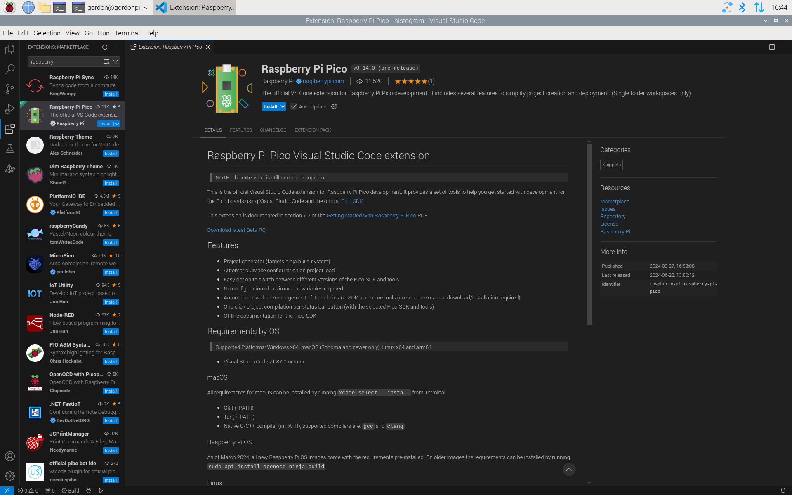
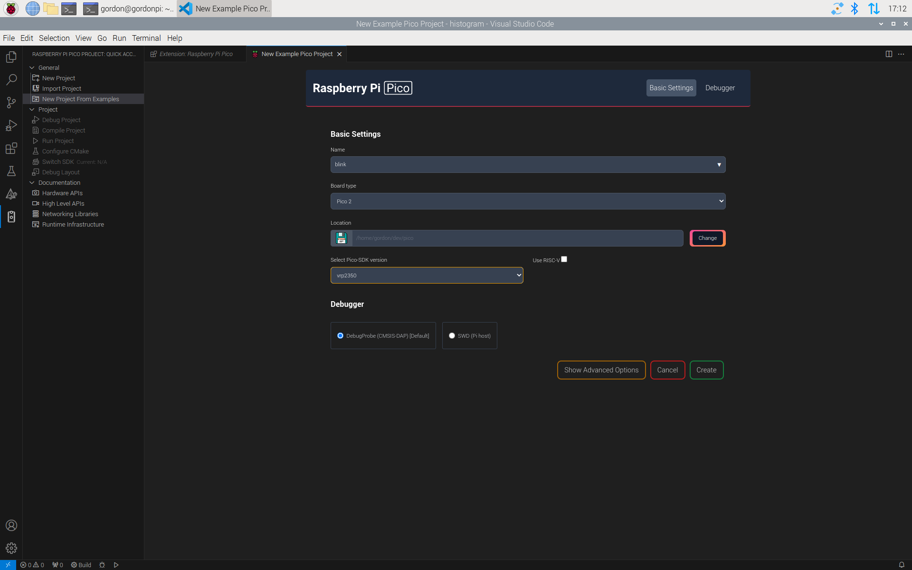
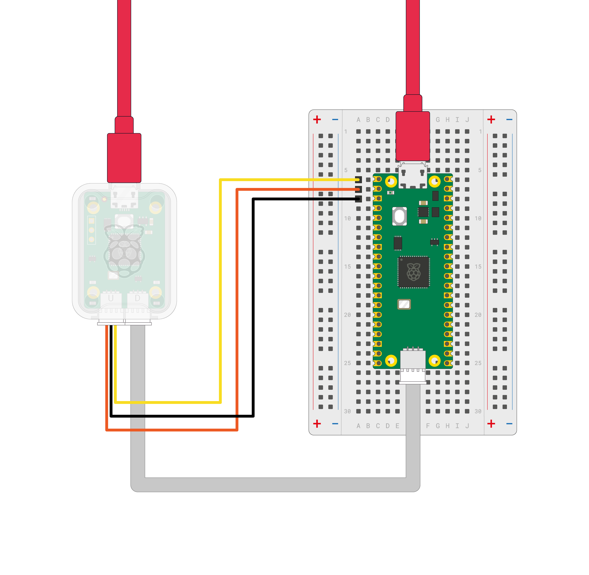
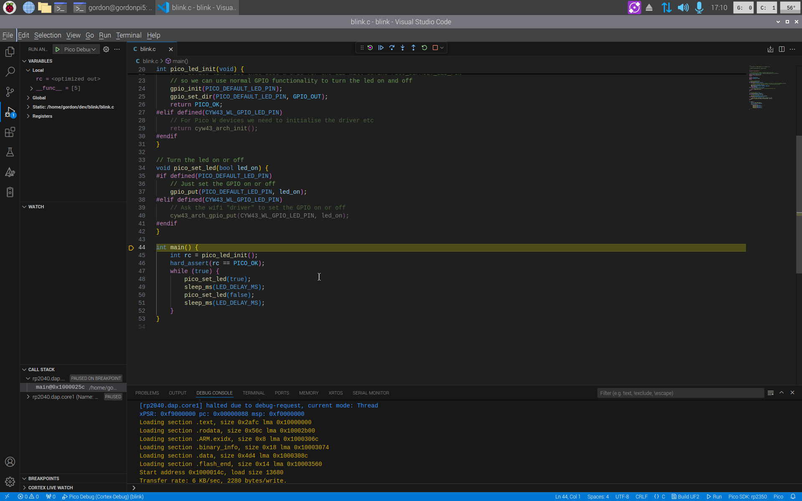
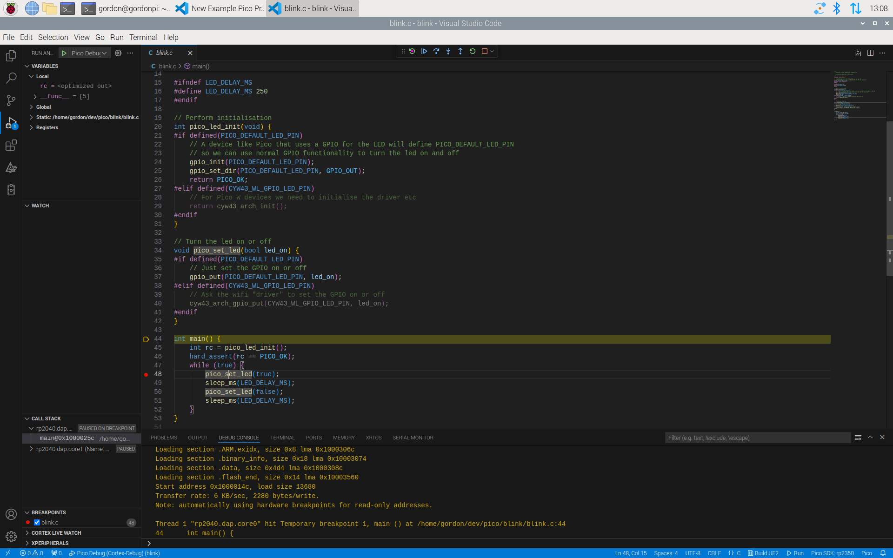
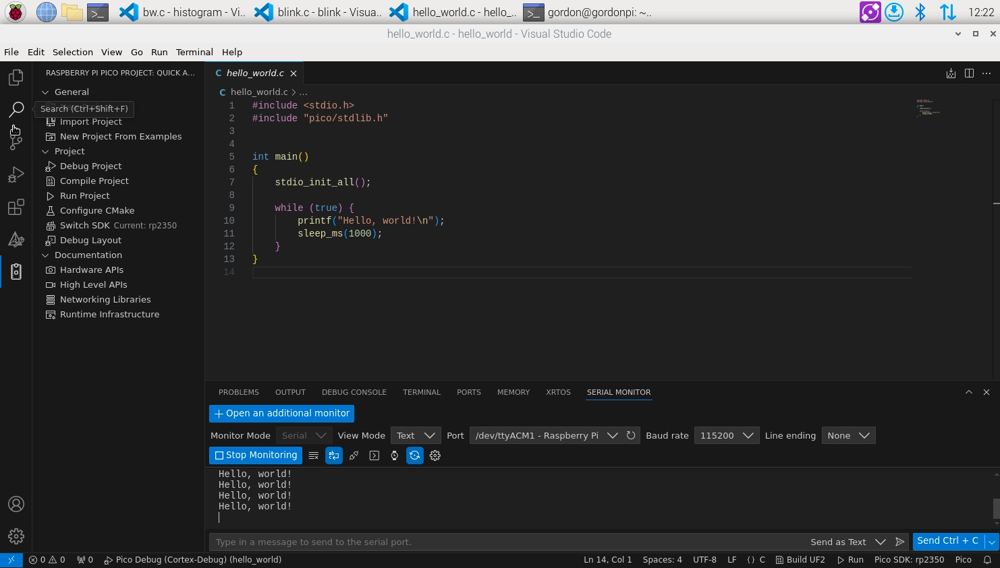
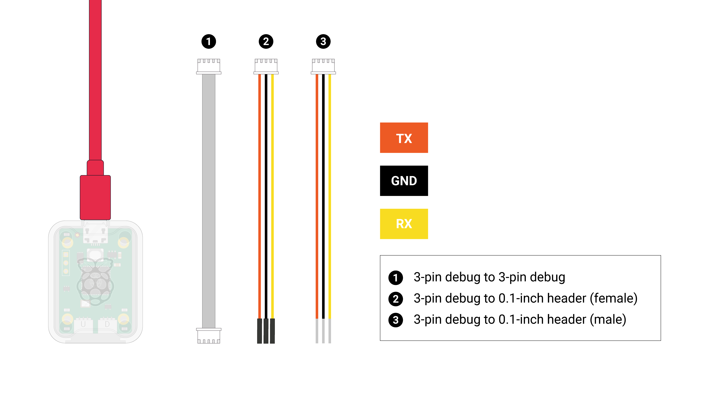
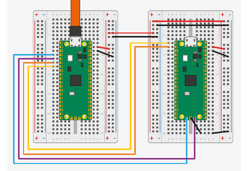
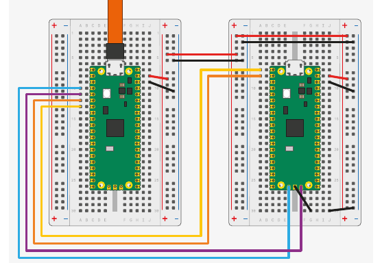

Raspberry Pi Pico 系列入门指南
C/C++ 开发：使用 Raspberry Pi Pico 系列及其他基于 Raspberry Pi 微控制器的开发板
原文档：Getting Started with Raspberry Pi Pico-series（RP-008276-DS-2） 发布版本：24 ｜ 构建日期：2026-07-03 ｜ 构建版本：d4e0f1799616 版权：© 2022-2026 Raspberry Pi Ltd，本文档采用 Creative Commons Attribution-NoDerivatives 4.0 International (CC BY-ND) 许可发布。
关于本译文：本文是上述官方文档的中文翻译。根据需求，已省略 Windows/macOS 相关的安装与操作步骤，以及原文档附录 D（其他集成开发环境，如 CLion）和附录 E（文档修订历史）。原文档开头的法律免责声明属固定样板文本，此处从略。代码、命令及程序输出保持原文，不作翻译。
目录
- 简介
- 安装 Visual Studio Code
- 安装 Raspberry Pi Pico VS Code 扩展
- 3.1 安装依赖
- 3.2 安装扩展
- 加载并调试项目
- 4.1 编译并运行 blink
- 4.2 修改代码并重新运行
- 4.3 调试
- 用 C 语言说 "Hello World"
- 5.1 Pico 系列设备上的串口输入输出
- 5.2 创建项目
- 5.3 构建项目
- 5.4 查看控制台输出
- 附录 A. Debugprobe（调试探针）
- 附录 B. Picotool
- 附录 C. 命令行工具链配置
1. 简介
要跟着本指南操作，你需要准备以下物品：
- 一块 Raspberry Pi Pico 系列设备
- 一根 Micro USB 连接线
以下物品在后续的部分步骤中需要用到：
- Raspberry Pi Debug Probe，或者第二块 Raspberry Pi Pico 系列设备
接下来的说明假设你使用的是 Pico 系列设备；如果你使用其他基于 Raspberry Pi 微控制器的开发板，部分细节可能有所不同。
Pico 系列设备围绕 Raspberry Pi 设计的微控制器构建。官方同时提供 C/C++ SDK 与官方 MicroPython 移植版，对开发板上的开发工作提供完整支持。本书介绍如何上手 SDK，并带你完成 SDK 工具链的构建、安装和使用。
提示
本书介绍的主要方法是使用 VS Code 扩展，让你的工作更轻松。如果你想改用命令行方式开发（例如在 Raspberry Pi OS Lite 上），请参阅附录 C. 命令行工具链配置。
关于官方 MicroPython 移植版的更多信息，请参阅：
- Raspberry Pi Pico 系列 Python SDK 的文档（https://pip.raspberrypi.com/documents/RP-008355-DS）
- Raspberry Pi Press 出版的图书 Get Started with MicroPython on Raspberry Pi Pico - 2nd Edition（https://magazine.raspberrypi.com/books/get-started-micropython-pico-2ed）
关于 C/C++ SDK 的更多信息，请参阅 Raspberry Pi Pico 系列 C/C++ SDK 的文档（https://pip.raspberrypi.com/documents/RP-009085-KB）。
2. 安装 Visual Studio Code
Visual Studio Code（VS Code）是由 Microsoft 开发的一款流行的开源编辑器。Raspberry Pi Pico VS Code 扩展让安装依赖和为 Pico 系列设备构建软件变得非常简单。
提示
如果你不想使用 VS Code，可以使用 VSCodium（社区驱动的自由开源替代品），或者手动配置你的环境。
在 Raspberry Pi OS 或 Linux 上安装 Visual Studio Code（VS Code），请运行以下命令：
你也可以从 https://code.visualstudio.com/Download 下载安装包进行安装。
3. 安装 Raspberry Pi Pico VS Code 扩展
Raspberry Pi Pico VS Code 扩展帮助你在 Visual Studio Code 中创建、开发、运行和调试项目。它内置了项目生成器（支持多种模板选项）、工具链自动管理、一键编译项目，以及 Pico SDK 的离线文档。
该 VS Code 扩展支持所有 Raspberry Pi Pico 系列设备。
3.1 安装依赖
3.1.1 Raspberry Pi OS
无需安装任何依赖。
原文此节为 "Raspberry Pi OS and Windows"，其中的 Windows 内容已按要求省略。
3.1.2 Linux
大多数 Linux 发行版已预装运行该扩展所需的全部依赖。不过，某些发行版可能需要额外安装依赖。该扩展需要以下组件：
- Python 3.9 或更高版本
- Git
- Tar
- 〔可选〕gdb-multiarch，用于调试（仅 x86_64）
- 〔可选〕安装 udev 规则，以便调试时无需
sudo即可使用 OpenOCD - 〔可选〕安装 udev 规则，以便加载程序时无需
sudo即可使用 picotool - 在 Ubuntu 22.04 上，需要安装
libftdi1-2和libhidapi-hidraw0软件包才能使用 OpenOCD
你可以用以下命令安装这些依赖：
原文中 macOS 的小节（3.1.3）已按要求省略。
3.2 安装扩展
你可以在 VS Code 扩展市场中找到该扩展。搜索 Raspberry Pi Pico 扩展（发布者为 Raspberry Pi），然后点击 Install 按钮将其添加到 VS Code。

商店页面：https://marketplace.visualstudio.com/items?itemName=raspberry-pi.raspberry-pi-pico
扩展的源代码和发行版下载地址：https://github.com/raspberrypi/pico-vscode
安装完成后，查看活动侧边栏（默认位于 VS Code 左侧）。如果安装成功，会出现一个新的侧边栏区域，带有一个 Raspberry Pi Pico 图标，标签为 "Raspberry Pi Pico Project"。
4. 加载并调试项目
VS Code 扩展可以基于 https://github.com/raspberrypi/pico-examples 提供的示例来创建项目。下面以创建一个让 Pico 系列设备上的 LED 闪烁的项目为例，带你走一遍整个流程：
- 在 VS Code 左侧边栏中，选择 Raspberry Pi Pico 图标，其标签为 "Raspberry Pi Pico Project"。
- 选择 New Project from Examples。
- 在 Name 字段中，选择
blink示例。 - 选择与你的设备相匹配的开发板类型。
- 指定一个文件夹，供扩展生成文件。VS Code 会在所选文件夹下新建一个子文件夹来存放新项目。
- 点击 Create 创建项目。
扩展现在会下载 SDK 和工具链，将它们安装到本地，并生成新项目。第一个项目安装工具链可能需要 5–10 分钟。由于我们为你自动生成了 .vscode 目录，VS Code 会询问你是否信任该目录的作者。选择「是」。

注意
此时 CMake Tools 扩展可能会显示一些通知。忽略并关闭它们即可。
现在，在 VS Code 左侧的资源管理器（Explorer）侧边栏中，你应该能看到一个文件列表。
打开 blink.c，即可在主窗口中查看 blink 示例的源代码。
Raspberry Pi Pico 扩展在屏幕右下角的状态栏中添加了一些功能：
Compile（编译） 编译源代码并构建目标 UF2 文件。你可以把这个二进制文件复制到设备上完成烧录。
Run（运行） 查找已连接的设备，把代码烧录进去并运行。
扩展侧边栏中也有一些快捷功能。点击侧边菜单中的 Pico 图标，你会看到 Compile Project。
点击 Compile Project，屏幕底部会打开一个终端标签页，显示编译进度。
4.1 编译并运行 blink
运行 blink 示例的步骤如下：
- 按住 Pico 系列设备上的 BOOTSEL 按钮，同时用 Micro USB 线把设备连接到你的开发主机，以此强制设备进入 USB 大容量存储模式。
- 按下状态栏中的 Run 按钮，或侧边栏中的 Run project 按钮。
你应该会看到窗口底部的终端标签页打开，显示代码上传的相关信息。代码上传完成后，设备会重启，你应该会看到以下输出：
你的 blink 代码现在开始运行了。观察设备，LED 应该每秒闪烁两次。
4.2 修改代码并重新运行
为了确认一切工作正常，在 VS Code 中点击 blink.c 文件。找到代码顶部 LED_DELAY_MS 的定义处：
- 把 250ms（四分之一秒）改为 100（十分之一秒）：
- 断开设备连接，然后按住 BOOTSEL 按钮重新连接。
- 按下状态栏中的 Run 按钮，或侧边栏中的 Run project 按钮。
你应该会看到窗口底部的终端标签页打开，显示代码上传的相关信息。代码上传完成后，设备会重启，你应该会看到以下输出：
你的 blink 代码现在开始运行了。观察设备，LED 应该闪得更快，每秒闪烁五次。
4.3 调试
Raspberry Pi Debug Probe 是适用于任何基于 Arm 的计算机的调试解决方案。你也可以使用其他调试硬件配合 Pico 系列设备，但我们推荐使用 Debug Probe，因为它的配置最为简单。如果你想用一块 Pico 系列设备充当 Debug Probe，请参阅附录 A.2 用第二块 Pico 或 Pico 2 进行调试。
首先，通过开发板上的调试接口把 Debug Probe 连接到你的 Pico 系列设备。不同的 Pico 设备需要不同的连接器。对于 Pico、Pico W 和 Pico 2，需要用烙铁把 Debug Probe 连接器焊接到开发板上；对于 Pico H、Pico WH 以及带排针的 Pico，调试排针已经焊好，直接用附带的线缆连接 Debug Probe 即可。

更多信息请参阅 Debug Probe 文档。
现在，把 Debug Probe 的 USB 插入你的计算机。注意 Debug Probe 不会给 Pico 设备供电，Pico 必须单独供电。
启动调试器的步骤：
- 点击 Pico 图标打开扩展侧边栏。
- 选择 Debug Project，或按
F5。 - 如果提示选择调试器，请选择 Pico Debug (Cortex-Debug)。
调试器会自动把代码下载到设备，在你的 main 函数开头插入一个断点，并运行到该断点处停下。

进入调试模式后，侧边栏中会出现若干窗口，显示设备当前状态的有用信息。顶部有一条小的控制栏，其中的按钮用于控制代码执行。把鼠标悬停在按钮上可以查看它们的名称。要继续执行代码，点击 Continue（F5）。
你的 blink 代码现在正在运行。观察设备，LED 应该像之前一样闪烁。现在按 Restart（Ctrl+Shift+F5）回到 main 函数的开头。
按一次 Step-over（F10）。高亮显示的行（表示下一条将要执行的语句）会前进到 pico_led_init 函数调用处。要步入这个函数，按 Step-into（F11）。源代码窗口会更新，显示执行位置现在位于该函数的开头。你可以继续单步执行代码直到函数返回 main，也可以按 Step-out（Shift+F11）直接执行完该函数。
返回 main 函数后，查看 Local Variables（局部变量）窗口，可以看到 rc 的值为 0（PICO_OK）。
再次按 Restart（Ctrl+Shift+F5）回到 main 函数开头。然后把光标移到 pico_set_led 那一行，按 F9。创建断点后，你会看到一个红点标示断点的位置：

点击红点即可添加或移除断点。
按 Continue（F5），执行应该会停在断点处。接着按 Step-over（F10），你应该会看到 LED 亮起。
5. 用 C 语言说 "Hello World"
在让 LED 点亮和熄灭之后，大多数开发者接下来想做的事就是创建并使用串口，然后说一句 "Hello World"。
5.1 Pico 系列设备上的串口输入输出
串口输入（stdin）和输出（stdout）可以被定向到串口 UART 和/或 USB CDC（USB 串口）。
使用串口 UART 控制台时，输入和输出通过设备上的 UART 引脚传输——默认使用 Pin 1（GP0）发送输出（UART0_TX），使用 Pin 2（GP1）接收输入（UART0_RX）。你需要把 Pico 系列设备上的 UART 引脚连接到一个 UART 转 USB 转换器（例如 Debug Probe），如 Debug Probe 接线图所示。
使用 USB CDC 控制台时，输入和输出直接通过连接到你计算机的 USB 线传输，因此不需要额外接线。不过在代码开始运行时，你可能会漏掉一部分打印内容，因为设备重启后，你的计算机可能需要一两秒钟才能连接到 Pico 系列设备。
使用扩展时，你可以根据自己的偏好选择其中一种控制台，或同时使用两种。
5.2 创建项目
注意
Pico SDK 使用 CMake 来管理其构建系统。如果你不想使用 VS Code 扩展，请参阅附录 C.2 手动创建你自己的项目。
- 在 VS Code 左侧边栏中，选择 Raspberry Pi Pico 图标，其标签为 "Raspberry Pi Pico Project"。
- 选择 New Project。
- 在 Name 字段中为项目命名，例如 "hello_world"。
- 选择与你的设备相匹配的开发板类型。
- 指定一个文件夹，供扩展生成文件。VS Code 会在所选文件夹下新建一个子文件夹来存放新项目。
- 在 "STDIO support" 下，选择你想要的控制台。
- 点击 Create 创建项目。
扩展现在会生成新项目。由于我们为你自动生成了 .vscode 目录，VS Code 会询问你是否信任该目录的作者。选择「是」。
5.3 构建项目
运行 "Hello world" 示例的步骤如下：
- 按住 Pico 系列设备上的 BOOTSEL 按钮，同时用 Micro USB 线把设备连接到你的开发主机，以此强制设备进入 USB 大容量存储模式。
- 按下状态栏中的 Run 按钮，或侧边栏中的 Run project 按钮。
你应该会看到窗口底部的终端标签页打开，显示代码上传的相关信息。代码上传完成后，设备会重启，你应该会看到以下输出：
你的 "Hello world" 代码现在开始运行了。
不过，虽然 "Hello World" 示例已经在运行，我们暂时还看不到输出的文本。
5.4 查看控制台输出
如果你使用的是 STDIO UART，请先确认已经完成接线。STDIO USB 除了连接到计算机之外不需要任何其他接线。
在 VS Code 中，打开 View 菜单，选择 Terminal 打开底部面板。在该面板中，你会找到 Serial Monitor 标签页。选择串口——可能不止一个。波特率应为 115200。选择 Start Monitoring 即可看到输出。

附录 A. Debugprobe（调试探针）
Raspberry Pi 提供两种调试 Pico 系列设备的方式：
- Raspberry Pi Debug Probe
- 在第二块 Pico 或 Pico 2 上运行 debugprobe 固件
两种方式都可以在包括 Windows、macOS 和 Linux 在内的平台上调试 Pico 系列设备。作为调试器的设备通过 USB 连接到你的常用计算机，并通过 SWD 和 UART 连接到目标 Pico。
A.1 Debug Probe
调试 Pico 系列设备最简单的方法是使用 Raspberry Pi Debug Probe。Raspberry Pi Debug Probe 提供串行线调试（SWD）以及一个通用的 USB 转串口桥。
注意
关于 Debug Probe 的更多信息，请参阅官方文档站点。
A.1.1 Debug Probe 接线


要把 Debug Probe 连接到 Pico H，请连接以下线路：
- Debug Probe 的 "D" 端口 → Pico H 的 "DEBUG" SWD JST-SH 连接器
- Debug Probe 的 "U" 端口，使用三针 JST-SH 转 0.1 英寸排针（公头）的线缆：
- Debug Probe RX → Pico H TX 引脚
- Debug Probe TX → Pico H RX 引脚
- Debug Probe GND → Pico H GND 引脚
然后连接两根 USB 线：一根从你的计算机连接到 Debug Probe 的 microUSB 端口，另一根从你的计算机连接到 Pico 的 microUSB 端口。
注意
如果你用的是非 H 版的 Pico、Pico 2 或 Pico W（没有 JST-SH 连接器），仍然可以把它连接到 Debug Probe。把公头连接器焊接到开发板上的
SWCLK、GND和SWDIO排针上。使用 Debug Probe 附带的另一根三针 JST-SH 转 0.1 英寸排针（母头）线缆，连接到 Debug Probe 的 "D" 端口。把 Pico 或 Pico W 上的SWCLK、GND和SWDIO分别连接到 Debug Probe 上的SC、GND和SD引脚。
Pico 与 Debug Probe 之间的线束连接如图 8 所示。
A.2 用第二块 Pico 或 Pico 2 进行调试
一块 Pico 或 Pico 2 可以使用 debugprobe 固件来为另一块重新烧录和调试，该固件把 Pico 或 Pico 2 变成一个 USB → SWD 与 UART 桥。

A.2.1 安装 debugprobe
你可以从 GitHub 上 debugprobe 的最新发行版下载 debugprobe 的 UF2 二进制文件。
按住 BOOTSEL 按钮启动作为调试器的 Pico 或 Pico 2，把 debugprobe_on_pico.uf2 复制到设备上即可开始调试。
注意
使用
debugprobe_on_pico.uf2可以把 Pico 用作调试器；使用debugprobe_on_pico2.uf2用于 Pico 2。Debug Probe 配件硬件请使用debugprobe.uf2。
A.3 debugprobe 接线

两块 Pico 开发板之间的线束连接如图 10 所示。
Pico A GND -> Pico B GND
Pico A GP2 -> Pico B SWCLK
Pico A GP3 -> Pico B SWDIO
Pico A GP4/UART1 TX -> Pico B GP1/UART0 RX
Pico A GP5/UART1 RX -> Pico B GP0/UART0 TX
通过 OpenOCD 加载和运行代码所需的最少连接是 GND、SWCLK 和 SWDIO。连接 UART 线，即可通过 Pico A 的 USB 连接与 Pico B 的 UART 串口通信。你也可以用这些 UART 线与任何其他 UART 串口设备通信，例如 Raspberry Pi 上的启动控制台。
要用 Pico B 给 Pico A 供电，请连接以下引脚：
- 当 USB 工作在设备模式或完全不使用时，连接
VSYS到VSYS - 当作为 USB 主机使用时，连接
VBUS到VBUS，以便在 USB 连接器上提供 5V 电压
A.4 Debug Probe 接口
Debug Probe 以及任何运行 debugprobe 的 Pico 系列设备都是复合设备，具有两个 USB 接口：
- 一个符合类规范的 CDC UART（串口），因此在 Windows 上开箱即用。
- 一个厂商自定义接口，用于传输符合 CMSIS-DAP v2 规范的 SWD 探针数据。
A.5 使用 UART
A.5.1 Linux
在 Linux 上使用 UART 连接，请运行以下命令：
原文中的 A.5.2（Windows）与 A.5.3（macOS）小节已按要求省略。
A.6 使用 OpenOCD 调试
A.6.1 获取 OpenOCD
支持所有 Pico 系列设备的 OpenOCD 二进制发行版可以从 GitHub 上的 Pico SDK tools 仓库获取。你也可以用以下命令自行构建并安装：
$ git clone https://github.com/raspberrypi/openocd.git --branch sdk-2.2.0
$ cd openocd
$ ./bootstrap
$ ./configure --disable-werror
$ make -j4
$ sudo make install
有了 Debug Probe，你就可以通过 SWD 端口和 OpenOCD 来加载二进制文件。
首先构建一个二进制文件。然后运行以下命令把该二进制文件上传到 Pico，其中把 blink.elf 替换为你刚构建的 ELF 文件名：
$ sudo openocd -f interface/cmsis-dap.cfg -f target/rp2040.cfg -c "adapter speed 5000" -c "program blink.elf verify reset exit"
如果你使用的是基于 RP2350 的开发板，则使用：
$ sudo openocd -f interface/cmsis-dap.cfg -f target/rp2350.cfg -c "adapter speed 5000" -c "program blink.elf verify reset exit"
A.6.2 使用 SWD 调试
你也可以让 OpenOCD 运行在服务器模式下，并连接一个能够提供断点等功能的调试器。
重要
为了让调试更容易，你可以使用
CMAKE_BUILD_TYPE选项以 Debug 构建类型来构建二进制文件：$ cd ~/pico/pico-examples/ $ cmake -S . -B build -DCMAKE_BUILD_TYPE=Debug -DPICO_BOARD=pico $ cmake --build build注意：对于 Raspberry Pi Pico 2，应使用
-DPICO_BOARD=pico2。Debug 构建进行的优化较少，这使得在调试器中运行时更容易看清程序的执行过程。
首先，运行一个 OpenOCD 服务器：
对于基于 RP2350 的设备，请改用 -f target/rp2350.cfg。
然后打开第二个终端窗口，启动调试器并把你的二进制文件作为参数传入：
GDB 并非在所有平台上都可用。请根据你的操作系统和设备，改用以下替代方案之一来代替 gdb：
- 在非 Raspberry Pi 的 Linux 设备上，使用
gdb-multiarch。 - 在基于 Arm 的 macOS 设备上，使用
lldb。
A.6.3 Rescue Debug Port（救援调试端口）
如果用户往 flash 中烧录了一些有问题的代码，可以使用 RP2040 或 RP2350 上的救援调试端口（Rescue DP）把芯片复位到已知状态。例如，关闭了系统时钟的代码会导致处理器调试端口无法访问，但救援 DP 仍然可用，因为它由 SWD 接口的 SWCLK 提供时钟。一次成功的救援 DP 操作会复位芯片，并在启动流程早期暂停 bootrom。
A.6.3.1 从 OpenOCD 激活 Rescue DP
提供了两个用于访问救援 DP 的目标配置：
rp2040-rescue.cfgrp2350-rescue.cfg
使用与你目标设备相对应的配置文件启动 OpenOCD。
$ openocd -f interface/cmsis-dap.cfg -f target/rp2040-rescue.cfg
...
Warn : gdb services need one or more targets defined
Now attach a debugger to your RP2040 and load some code
Info : Listening on port 6666 for tcl connections
Info : Listening on port 4444 for telnet connections
按 Ctrl + C 停止。
现在用普通配置启动 OpenOCD。
注意
在 RP2350 上，
CRIT1.DEBUG_DISABLE和CRIT1.SECURE_DEBUG_DISABLE这两个 OTP 标志（或设置了调试密钥索引）所带来的效果，无法通过救援 DP 复位来解除。
附录 B. Picotool
你可以把信息嵌入到 Pico 系列的二进制文件中，这些信息可以通过一个名为 picotool 的命令行工具读取出来。
B.1 获取 picotool
picotool 工具位于它自己的仓库中。如果你没有使用 VS Code 扩展，或者没有运行过 pico-setup 脚本，那么你需要下载预编译的二进制文件，或者自行构建——两种方式的详细说明都可以在 picotool README.md 中找到。
B.2 使用 picotool
picotool 二进制文件内置了命令行帮助功能，会列出所有可用命令：
$ picotool help
PICOTOOL:
Tool for interacting with RP-series device(s) in BOOTSEL mode, or with an RP-series binary
SYNOPSIS:
picotool info [-b] [-m] [-p] [-d] [--debug] [-l] [-a] [device-selection]
picotool info [-b] [-m] [-p] [-d] [--debug] [-l] [-a] <filename> [-t <type>]
picotool config [-s <key> <value>] [-g <group>] [device-selection]
picotool config [-s <key> <value>] [-g <group>] <filename> [-t <type>]
picotool load [--ignore-partitions] [--family <family_id>] [-p <partition>] [-n] [-N] [-u]
[-v] [-x] <filename> [-t <type>] [-o <offset>] [device-selection]
picotool encrypt [--quiet] [--verbose] [--embed] [--fast-rosc] [--use-mbedtls]
[--otp-key-page <page>] [--hash] [--sign] <infile> [-t <type>] [-o <offset>]
<outfile> [-t <type>] <aes_key> <iv_salt> <signing_key> <otp>
picotool seal [--quiet] [--verbose] [--hash] [--sign] [--clear] <infile> [-t <type>] [-o
<offset>] <outfile> [-t <type>] <key> <otp> [--major <major>] [--minor <minor>]
[--rollback <rollback> [<rows>..]]
picotool link [--quiet] [--verbose] <outfile> [-t <type>] <infile1> [-t <type>] <infile2>
[-t <type>] [<infile3>] [-t <type>] [-p <pad>]
picotool save [-p] [-v] [--family <family_id>] <filename> [-t <type>] [device-selection]
picotool save -a [-v] [--family <family_id>] <filename> [-t <type>] [device-selection]
picotool save -r <from> <to> [-v] [--family <family_id>] <filename> [-t <type>]
[device-selection]
picotool erase [-a] [device-selection]
picotool erase -p <partition> [device-selection]
picotool erase -r <from> <to> [device-selection]
picotool verify <filename> [-t <type>] [device-selection] [-r <from> <to>] [-o <offset>]
[device-selection]
picotool reboot [-a] [-u] [-g <partition>] [-c <cpu>] [device-selection]
picotool otp list|get|set|load|dump|permissions|white-label
picotool partition info|create
picotool uf2 info|convert
picotool version [-s] [<version>]
picotool coprodis [--quiet] [--verbose] <infile> <outfile>
picotool help [<cmd>]
COMMANDS:
info Display information from the target device(s) or file.
Without any arguments, this will display basic information for all connected
RP-series devices in BOOTSEL mode
config Display or change program configuration settings from the target device(s) or
file.
load Load the program / memory range stored in a file onto the device.
encrypt Encrypt the program.
seal Add final metadata to a binary, optionally including a hash and/or signature.
link Link multiple binaries into one block loop.
save Save the program / memory stored in flash on the device to a file.
erase Erase the program / memory stored in flash on the device.
verify Check that the device contents match those in the file.
reboot Reboot the device
otp Commands related to the RP2350 OTP (One-Time-Programmable) Memory
partition Commands related to RP2350 Partition Tables
uf2 Commands related to UF2 creation and status
version Display picotool version
coprodis Post-process coprocessor instructions in disassembly files.
help Show general help or help for a specific command
Use "picotool help <cmd>" for more info
注意
大多数命令都需要连接一台处于 BOOTSEL 模式的 Raspberry Pi 微控制器设备。
重要
如果你收到错误信息
No accessible RP2040/RP2350 devices in BOOTSEL mode were found.，并伴有类似Device at bus 1, address 7 appears to be a RP2040 device in BOOTSEL mode, but picotool was unable to connect的提示——这表明确实连接了一台 Pico 系列设备——那么你可以用sudo运行 picotool，例如：原文此处还包含一条针对 Windows 上 RP2040 需要安装驱动（Zadig/WinUSB）的说明，按需求已省略。
从 picotool 1.1 版本开始，你还可以与不在 BOOTSEL 模式、但使用了 Pico SDK 的 USB stdio 支持的 Raspberry Pi 微控制器交互，方法是使用 picotool 的 -f 参数。
B.2.1 显示信息
SDK 现在支持 Binary Information（二进制信息），可以方便地存储供 picotool 查找的紧凑信息（见下文 B.2.3 二进制信息）。info 命令就是用来读取这些信息的。
这些信息可以从一台或多台处于 BOOTSEL 模式的已连接 Raspberry Pi 微控制器上读取，也可以从文件中读取。文件可以是 ELF、UF2 或 BIN 文件。
$ picotool help info
INFO:
Display information from the target device(s) or file.
Without any arguments, this will display basic information for all connected RP-series
devices in BOOTSEL mode
SYNOPSIS:
picotool info [-b] [-m] [-p] [-d] [--debug] [-l] [-a] [device-selection]
picotool info [-b] [-m] [-p] [-d] [--debug] [-l] [-a] <filename> [-t <type>]
OPTIONS:
Information to display
-b, --basic
Include basic information. This is the default
-m, --metadata
Include all metadata blocks
-p, --pins
Include pin information
-d, --device
Include device information
--debug
Include device debug information
-l, --build
Include build attributes
-a, --all
Include all information
TARGET SELECTION:
To target one or more connected RP-series device(s) in BOOTSEL mode (the default)
--bus <bus>
Filter devices by USB bus number
--address <addr>
Filter devices by USB device address
--vid <vid>
Filter by vendor id
--pid <pid>
Filter by product id
--ser <ser>
Filter by serial number
-f, --force
Force a device not in BOOTSEL mode but running compatible code to reset so the
command can be executed. After executing the command (unless the command itself is a
'reboot') the device will be rebooted back to application mode
-F, --force-no-reboot
Force a device not in BOOTSEL mode but running compatible code to reset so the
command can be executed. After executing the command (unless the command itself is a
'reboot') the device will be left connected and accessible to picotool, but without
the USB drive mounted
To target a file
<filename>
The file name
-t <type>
Specify file type (uf2 | elf | bin) explicitly, ignoring file extension
例如，先按住 BOOTSEL 按钮再插入 USB，把你的 Pico 系列设备以大容量存储模式连接到计算机。然后打开终端窗口，输入：
或者：
$ sudo picotool info -a
Program Information
name: hello_world
features: stdout to UART
binary start: 0x10000000
binary end: 0x1000606c
Fixed Pin Information
20: UART1 TX
21: UART1 RX
Build Information
build date: Dec 31 2020
build attributes: Debug build
Device Information
flash size: 2048K
ROM version: 2
想了解更多信息，或者你也可以只查看所用引脚的信息：
$ sudo picotool info -bp
Program Information
name: hello_world
features: stdout to UART
Fixed Pin Information
20: UART1 TX
21: UART1 RX
该工具也可以用于仍在你本地文件系统中的二进制文件：
$ picotool info -a lcd_1602_i2c.uf2
File lcd_1602_i2c.uf2:
Program Information
name: lcd_1602_i2c
web site: https://github.com/raspberrypi/pico-examples/tree/HEAD/i2c/lcd_1602_i2c
binary start: 0x10000000
binary end: 0x10003c1c
Fixed Pin Information
4: I2C0 SDA
5: I2C0 SCL
Build Information
build date: Dec 31 2020
B.2.2 保存程序
save 允许你把设备上的一段内存、某个程序或整个 flash 保存为 BIN 文件或 UF2 文件。
$ picotool help save
SAVE:
Save the program / memory stored in flash on the device to a file.
SYNOPSIS:
picotool save [-p] [-v] [--family <family_id>] <filename> [-t <type>] [device-selection]
picotool save -a [-v] [--family <family_id>] <filename> [-t <type>] [device-selection]
picotool save -r <from> <to> [-v] [--family <family_id>] <filename> [-t <type>]
[device-selection]
OPTIONS:
Selection of data to save
-p, --program
Save the installed program only. This is the default
-a, --all
Save all of flash memory
-r, --range
Save a range of memory. Note that UF2s always store complete 256 byte-aligned blocks
of 256 bytes, and the range is expanded accordingly
<from>
The lower address bound in hex
<to>
The upper address bound in hex
Other
-v, --verify
Verify the data was saved correctly
--family
Specify the family ID to save the file as
<family_id>
family ID to save file as
File to save to
<filename>
The file name
-t <type>
Specify file type (uf2 | elf | bin) explicitly, ignoring file extension
Source device selection
--bus <bus>
Filter devices by USB bus number
--address <addr>
Filter devices by USB device address
--vid <vid>
Filter by vendor id
--pid <pid>
Filter by product id
--ser <ser>
Filter by serial number
-f, --force
Force a device not in BOOTSEL mode but running compatible code to reset so the
command can be executed. After executing the command (unless the command itself is a
'reboot') the device will be rebooted back to application mode
-F, --force-no-reboot
Force a device not in BOOTSEL mode but running compatible code to reset so the
command can be executed. After executing the command (unless the command itself is a
'reboot') the device will be left connected and accessible to picotool, but without
the USB drive mounted
例如：
$ sudo picotool info
Program Information
name: lcd_1602_i2c
web site: https://github.com/raspberrypi/pico-examples/tree/HEAD/i2c/lcd_1602_i2c
$ picotool save spoon.uf2
Saving file: [==============================] 100%
Wrote 51200 bytes to spoon.uf2
$ picotool info spoon.uf2
File spoon.uf2:
Program Information
name: lcd_1602_i2c
web site: https://github.com/raspberrypi/pico-examples/tree/HEAD/i2c/lcd_1602_i2c
B.2.3 二进制信息
二进制信息（Binary Information）是在构建时嵌入到二进制文件中的、机器可定位且机器可读的信息。
B.2.4 基本信息
当你拿到一块 Pico 系列设备却不知道里面烧了什么程序时，这些信息非常有用！
基本信息包括：
- 程序名称
- 程序描述
- 程序版本字符串
- 程序构建日期
- 程序 URL
- 程序结束地址
- 程序功能特性（program features）：这是由二进制文件中的各个字符串构成的列表，可以显示出来（例如 SDK 中会有一个用于 UART stdio、一个用于 USB stdio）
- 构建属性（build attributes）：这是一个类似的字符串列表，用于描述与二进制文件本身相关的内容（例如 Debug Build）
B.2.5 引脚
当你手头有个可执行文件 hello_serial.elf，却忘了它是为哪块基于 Raspberry Pi 微控制器的开发板构建的时候，这个功能就非常方便了——因为不同的开发板引出的引脚可能不同。
静态（固定）引脚分配可以以非常紧凑的形式记录在二进制文件中：
$ picotool info --pins sprite_demo.elf
File sprite_demo.elf:
Fixed Pin Information
0-4: Red 0-4
6-10: Green 0-4
11-15: Blue 0-4
16: HSync
17: VSync
18: Display Enable
19: Pixel Clock
20: UART1 TX
21: UART1 RX
B.2.6 完整信息
使用 -a 选项可以显示完整信息：
$ picotool info -a i2c_bus_scan.elf
File i2c_bus_scan.elf:
Program Information
name: i2c_bus_scan
web site: https://github.com/raspberrypi/pico-examples/tree/HEAD/i2c/bus_scan
features: UART stdin / stdout
binary start: 0x10000000
binary end: 0x10004c74
Fixed Pin Information
0: UART0 TX
1: UART0 RX
4: I2C0 SDA
5: I2C0 SCL
Build Information
sdk version: 2.0.0-develop
pico_board: pico
build date: Aug 1 2024
build attributes: Debug
附录 C. 命令行工具链配置
C.1 通过脚本配置环境
如果你在运行 Raspberry Pi OS 的 Raspberry Pi 上为 Pico 系列设备开发，那么可以使用 pico_setup.sh 脚本来搭建命令行环境。
该脚本会自动完成以下配置工作：
- 在你运行
pico_setup.sh脚本的文件夹中创建一个名为pico的目录 - 安装所需的依赖
- 下载
pico-sdk、pico-examples、pico-extras和pico-playground仓库 - 在你的
~/.bashrc中定义PICO_SDK_PATH、PICO_EXAMPLES_PATH、PICO_EXTRAS_PATH和PICO_PLAYGROUND_PATH - 下载、构建并安装 picotool（参见附录 B. Picotool）
- 下载并构建 debugprobe（参见附录 A. Debugprobe）
- 构建
blink和hello_world示例项目 - 下载并编译 OpenOCD（用于调试支持）
- 配置你的开发用 Raspberry Pi 的 UART，使其可与 Pico 系列设备配合使用
pico_setup.sh 的 README.md 中还包含如何在命令行下为 Pico 系列设备构建、加载和调试程序的说明。
提示
该配置脚本需要约 4 GB 的 SD 卡磁盘空间，因此运行前请确认有足够的可用空间。你可以用
df -h命令查看剩余磁盘空间。
首先运行以下命令安装 wget：
然后用 chmod 把脚本标记为可执行：
用以下命令运行该脚本：
最后，重启你的 Raspberry Pi 以加载 UART 配置的改动：
C.1.1 手动配置环境
关于手动配置环境的详细信息，请参阅 pico_setup.sh 的 README.md。
C.1.2 更新 Pico SDK
当新版本的 Pico SDK 发布后，你必须更新本地的 SDK 副本，并且建议删除所有本地构建目录。更新时，进入 pico-sdk 目录并运行以下命令（对于 pico-examples 也应做同样的操作）：
你还需要更新本地的 picotool 副本，并重新构建和安装它——进入 picotool 目录并运行以下命令：
注意
如果想及时获知新版本发布，可以在 pico-sdk 的 GitHub 仓库上设置自定义关注（watch）。仓库地址：https://github.com/raspberrypi/pico-sdk
C.2 手动创建你自己的项目
先创建一个目录来存放你的测试项目，让它与 pico-sdk 目录并列：
$ cd ~/pico
$ ls -la
total 16
drwxr-xr-x 7 aa staff 224 6 Apr 10:41 ./
drwx------@ 27 aa staff 864 6 Apr 10:41 ../
drwxr-xr-x 10 aa staff 320 6 Apr 09:29 pico-examples/
drwxr-xr-x 13 aa staff 416 6 Apr 09:22 pico-sdk/
$ mkdir test
$ cd test
然后在该目录中创建一个 test.c 文件：
#include <stdio.h>
#include "pico/stdlib.h"
#include "hardware/gpio.h"
#include "pico/binary_info.h"
const uint LED_PIN = 25;<1>
int main() {
bi_decl(bi_program_description("This is a test binary."));<2>
bi_decl(bi_1pin_with_name(LED_PIN, "On-board LED"));
stdio_init_all();
gpio_init(LED_PIN);
gpio_set_dir(LED_PIN, GPIO_OUT);
while (1) {
gpio_put(LED_PIN, 0);
sleep_ms(250);
gpio_put(LED_PIN, 1);
puts("Hello World\n");
sleep_ms(1000);
}
}
在 Pico 和 Pico 2 上，板载 LED 连接到 GP25；如果你是为 Pico W 构建，LED 连接到 CYW43_WL_GPIO_LED_PIN。更多信息请参阅 pico-examples GitHub 仓库中的 Pico W blink 示例。上面 <1>、<2> 标记的这些行会往二进制文件中添加字符串，可用 picotool 查看，参见附录 B. Picotool。
再创建一个 CMakeLists.txt 文件：
cmake_minimum_required(VERSION 3.13)
include(pico_sdk_import.cmake)
project(test_project C CXX ASM)
set(CMAKE_C_STANDARD 11)
set(CMAKE_CXX_STANDARD 17)
pico_sdk_init()
add_executable(test
test.c
)
target_link_libraries(test pico_stdlib)
pico_enable_stdio_usb(test 1)<1>
pico_enable_stdio_uart(test 1)<2>
pico_add_extra_outputs(test)
<1>启用通过 USB 的串口输出。这会创建一个 USB CDC 接口，以支持通过 USB 串口（CDC）进行 stdin/stdout 通信。<2>启用通过 UART 的串口输出。这会添加对开发板上默认 UART 引脚（Pico 系列设备为 GPIO 0 和 1）进行 stdin/stdout 通信的支持。
然后把你 pico-sdk 安装目录中 external 文件夹下的 pico_sdk_import.cmake 文件复制到你的测试项目文件夹中：
现在你的目录看起来应该像这样：
$ ls -la
total 24
drwxr-xr-x 5 aa staff 160 6 Apr 10:46 ./
drwxr-xr-x 7 aa staff 224 6 Apr 10:41 ../
-rw-r--r--@ 1 aa staff 394 6 Apr 10:37 CMakeLists.txt
-rw-r--r-- 1 aa staff 2744 6 Apr 10:40 pico_sdk_import.cmake
-rw-r--r-- 1 aa staff 383 6 Apr 10:37 test.c
然后就可以像构建 pico-examples 一样构建它了：
重要
默认情况下 SDK 为 Raspberry Pi Pico 构建二进制文件。要为其他开发板构建，请向 CMake 传入
-DPICO_BOARD=<board>选项，把<board>占位符替换为你要面向的开发板名称。为 Pico 2 构建请传入-DPICO_BOARD=pico2；为 Pico W 构建请传入-DPICO_BOARD=pico_w。如果要指定 Pico W 应连接的 Wi-Fi 网络和密码，请传入-DWIFI_SSID="Your Network" -DWIFI_PASSWORD="Your Password"。
构建过程会生成多种不同的文件，其中比较重要的文件如下表所示。
| 文件扩展名 | 说明 |
|---|---|
.bin |
程序代码和数据的原始二进制转储 |
.elf |
完整的程序输出，可能包含调试信息 |
.uf2 |
UF2 格式的程序代码和数据，可以在设备作为 USB 驱动器挂载时拖放烧录到设备上 |
.dis |
编译后二进制文件的反汇编 |
.hex |
编译后二进制文件的十六进制转储 |
.map |
与 .elf 文件配套的映射（map）文件，描述链接器如何把各个段安排在内存中 |
注意
UF2（USB Flashing Format）是 Microsoft 开发的一种文件格式，用于通过 USB 给 Raspberry Pi 微控制器烧录固件。更多信息请参阅 Microsoft UF2 规范仓库。
注意
如果你想构建一个在 SRAM 而不是 Flash 中运行的二进制文件，可以在 cmake 构建时设置
-DPICO_NO_FLASH=1，或者在CMakeLists.txt中为每个二进制目标单独添加pico_set_binary_type(TARGET_NAME no_flash)来控制。你可以通过 UF2 把 RAM 二进制文件下载到 Raspberry Pi 微控制器上。例如，如果你的开发板上没有 flash 芯片，就可以用 UF2 下载一个在片上 RAM 中运行的二进制文件，因为 UF2 只是指定了数据要去的地址。注意：你只能下载到 RAM 或 FLASH 之一，不能同时下载到两者。
C.2.1 调试你的项目
在命令行下调试你自己的项目，流程与附录 A.6.2 使用 SWD 调试相同。
需要更多细节？
这里的内容应该足以让你上手，但你可能会好奇为什么需要这些文件和这些“咒语”。Raspberry Pi Pico 系列 C/C++ SDK 一书深入讲解了你的项目究竟是如何构建的，以及我们这里的
CMakeLists.txt文件中的各行与 SDK 结构之间的关系——如果将来你想了解更多，可以查阅该书。